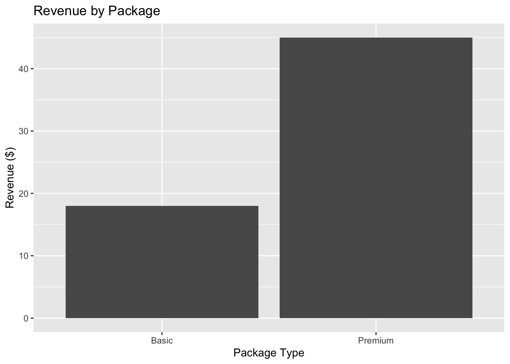
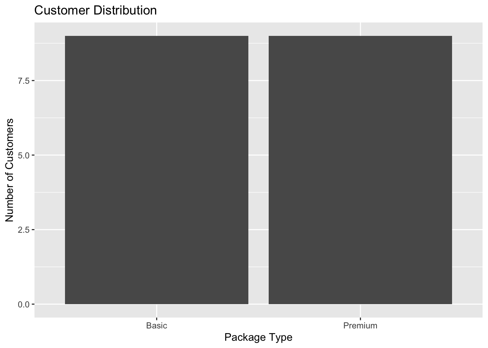
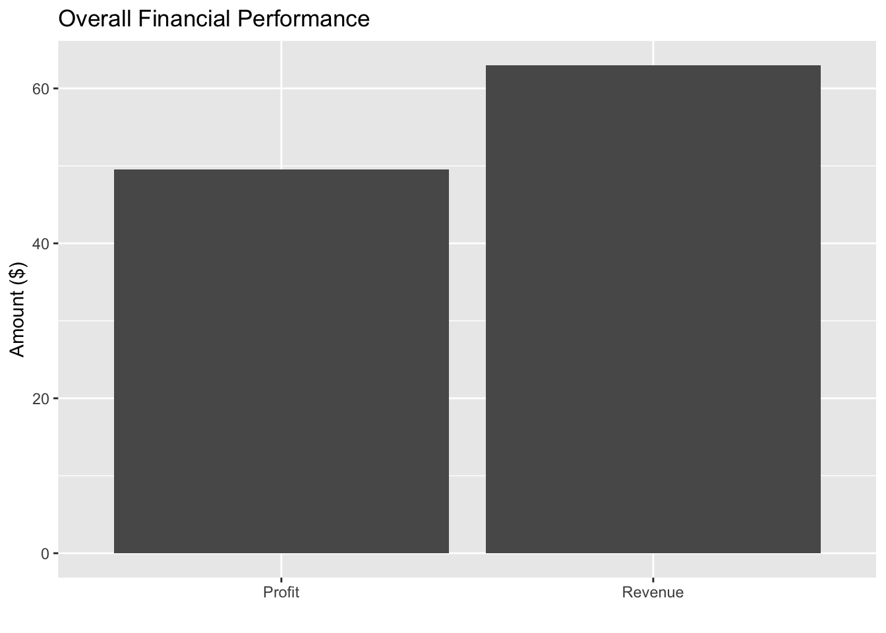
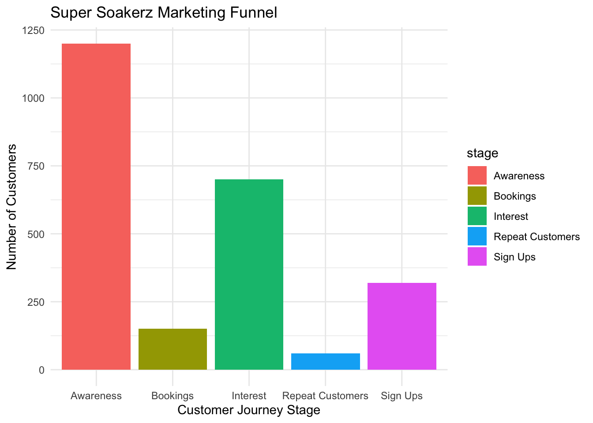

Student-Led Service Marketing Business: Super Soakerz
Super Soakerz Marketing Campaign
NoteStudent Led Business Project
A student run marketing project focused on brand building, customer engagement, and real campaign results at Cal Poly Pomona.
Project Background
Super Soakerz was a student led car window washing business created as part of an introductory marketing course at Cal Poly Pomona. The goal was to build a brand from scratch, attract customers, and test real marketing strategies in a real campus setting. Our team focused on creating a fun, affordable, and convenient service for students.
Marketing Strategy
We targeted Cal Poly Pomona commuter students, especially those ages 18 to 25 who wanted a quick and low cost service. We positioned Super Soakerz as a student run, eco friendly, and easy option for car window cleaning. Our campaign focused on affordability, convenience, and visibility.
Activation Concept
This project also connects to sports and event marketing because it used live, in person promotion and customer interaction. If expanded into a sports setting, the concept could work as a parking lot or fan zone activation where people interact with a brand before entering an event. This showed how service marketing can connect with fan engagement and experiential marketing.
Execution
Our team promoted the service through on campus signage, hand held posters, peer to peer outreach, and Instagram content. We used bright visuals and simple messaging to make the service easy to understand. The goal was to create awareness quickly and encourage students to try the service while already on campus.
Analytics and Results
The campaign served 18 customers total, with 9 Basic Package sales and 9 Premium Package sales. The Basic Package was priced at $2 and the Premium Package was priced at $5. In total, the project generated $63 in revenue and $49.50 in profit.


── Attaching core tidyverse packages ──────────────────────── tidyverse 2.0.0 ──
✔ dplyr 1.1.4 ✔ readr 2.2.0
✔ forcats 1.0.1 ✔ stringr 1.6.0
✔ lubridate 1.9.4 ✔ tibble 3.3.1
✔ purrr 1.2.1 ✔ tidyr 1.3.2
── Conflicts ────────────────────────────────────────── tidyverse_conflicts() ──
✖ dplyr::filter() masks stats::filter()
✖ dplyr::lag() masks stats::lag()
ℹ Use the conflicted package (<http://conflicted.r-lib.org/>) to force all conflicts to become errors
Key Performance Indicators
This project showed that convenience, affordability, and clear branding were the strongest factors driving interest. Students also responded positively to the eco friendly aspect of the service. The balanced sales split between both packages suggested that customers saw value in both price options. Social media and in person promotion worked best when combined.
| Metric | Value |
|---|---|
| Total Leads | 1200 |
| Bookings | 150 |
| Conversion Rate | 12.5% |
| Revenue Generated | $4,500 |
| Repeat Customers | 60 |
Reflection
Super Soakerz helped me strengthen my skills in campaign planning, customer engagement, brand positioning, and marketing analysis. It gave me hands on experience with real promotion, real customer response, and real business results. This project also showed me how marketing strategy, live activation, and analytics can work together, which is why it connects strongly to my interest in sports marketing, partnerships, and fan engagement.
Super Soaker Student-Led Service Marketing Project
Real Service Execution
This project involved live service delivery within a campus parking structure, allowing the marketing strategy to operate through visibility, peer observation, and real-time engagement.